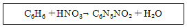
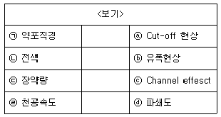
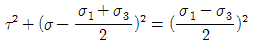
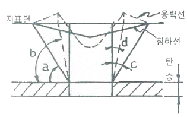
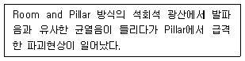

화약류관리산업기사 (2017-09-23 기출문제)
1과목: 일반화약학
1. 노벨이 제조한 뇌홍 뇌관의 관체에 해당하는 것은?
- 구리
- 알루미늄
- 압
- 니켈
(정답률: 알수없음)

2. 다음 중 화약류가 아닌 것은?
- 뇌홍
- 아지화납
- 질산전분
- 탄산수소칼륨
(정답률: 알수없음)
3. 질산암모늄 폭약의 위력을 크게 하기 위해서 알루미늄 가루를 배합한 폭약의 명칭은?
- ANFO
- 아마톨
- 테트라센
- 암모날
(정답률: 알수없음)
4. 산소 공급제에 해당되지 않는 것은?
- 질산암모늄
- 과염소산칼륨
- 질산나트륨
- 암모니아
(정답률: 70%)
5. 벤젠의 니트로화 반응에서 혼산 10kg을 사용하여 벤젠과 질산을 다음 반응식과 같이 반응시켰을 때의 DVS(Dehydrating Value of Sulfuric acid) 값은? (단, 혼산의 조정은 H2SO4:62%, HNO3:30%, H2O : 8% 이다.)

- 2.25
- 3.74
- 7.48
- 10.25
(정답률: 20%)
6. 뇌관 1개의 저항 1.4Ω 인 전기뇌관 10발을 직렬로 결선하여 제발하려면 최소 몇 V의 전압이 필요한가? (단, 단선 1m의 저항이 0.02Ω인 보조모선의 총 연장길이는 100m이며, 뇌관 1개당 소요전류는 2A, 발파기의 내부저항은 없다고 한다.)
- 9
- 18
- 32
- 36
(정답률: 알수없음)
7. 목분 1kg이 연소하면 약 961L의 산소가 부족하여 산소 공급제로 질산칼륨을 사용한다. 이 때 산소평형을 위한 질산칼륨의 이론적 양은 약 몇 kg 인가? (단, 원자량 K:39, N:14, O:16 이고 질산칼륨 1kg당 산소는 277L가 발생한다.)
- 0.5
- 1.5
- 2.5
- 3.5
(정답률: 알수없음)
8. 니트라민계 화합폭약에 해당하는 것은?
- RDX
- 피크린산
- TNT
- DNN
(정답률: 알수없음)
9. 폭속에 관한 설명으로 옳은 것은?
- 약포의 지름이 커지면 폭속은 작아진다.
- 약포를 용기에 넣으면 폭속은 커진다.
- 장전비중(밀도)을 작게 하면 폭속은 커진다.
- 폭속이 큰 폭약일수록 파괴력이 작다.
(정답률: 55%)
10. 피크린산과 반응하여 금속염을 만들지 않는 것은?
- 철
- 구리
- 납
- 주석
(정답률: 알수없음)
11. 다이너마이트에 함유하는 NC 의 역할은?
- 예감제
- 산소공급제
- 소염제
- 교화제
(정답률: 50%)
12. 어떤 화약의 순폭거리가 200mm 이었고, 약포의 지름은 40mm 이었다면, 화약의 순폭도는 얼마인가?
- 5
- 10
- 25
- 30
(정답률: 50%)
13. 비중은 약 1.7, 융점은 약 141℃ 인 백색의 주상결정으로 충격에는 예민하지만 열에는 비교적 둔감하고 뇌관의 첨장약으로 사용되는 폭약은?
- C10H6(NO2)2
- C6H4(NO2)2
- C(CH2ONO2)4
- C6H3(NO2)3
(정답률: 알수없음)
14. 연화의 발사약으로 사용되는 화약은?
- 흑색화약
- SB화약
- DB화약
- TB화약
(정답률: 알수없음)
15. 기폭약(Initiating explosives)으로 사용되는 것은?
- Nitrocellulose
- TNT
- DDNP
- Nitroglycerine
(정답률: 46%)
16. 다음 중 감열소염제로만 이루어져 있는 것은?
- 염화칼륨, 나프탈렌
- 염화칼륨, 염화나트륨
- 질산암모늄, 질산칼륨
- 염화나트륨, 나프탈렌
(정답률: 알수없음)
17. 과염소산암모늄의 분자식에 해당하는 것은?
- NH4ClO3
- NH4ClO4
- NH4Cl3
- NH4Cl4
(정답률: 70%)
18. 맹도에 관한 설명으로 옳은 것은?
- 폭발시 최대압력을 나타내기까지의 시간 기울기
- 폭발파가 전파되는 속도
- 감응에 의한 폭발
- 폭발의 용이성
(정답률: 알수없음)
19. 다음 중 발사약으로 사용되는 것은?
- TNT
- 무연화약
- 뇌홍
- 질산암모늄
(정답률: 알수없음)
20. 도화선의 심약으로 사용하는 것은?
- 무연화약
- 질산암모늄
- 니트로글리세린
- 흑색화약
(정답률: 알수없음)
2과목: 발파공학
21. 다음의 터널 심삐기 방법 중 그 성격이 나머지 셋과 다른 것은?
- 스피럴 컷(Spiral Cut)
- 다이아몬드 컷(Diamond Cut)
- 코로만트 컷(Coromant Cut)
- 슬롯 컷(Slot cut)
(정답률: 알수없음)
22. 중경암인 화강암에 대하여 시험발파에서 천공경을 28mm로 하고 장약길이를 천공경의 12배로 하였을 때 장약량은 약 몇 g인가? (단, 암석계수는 0.025이며, 폭약비중은 1.5이다.)
- 298.10
- 310.18
- 320.18
- 334.13
(정답률: 알수없음)
23. 뇌관 및 도폭선 결선에 대한 설명으로 옳지 않은 것은?
- 도폭선은 흡습을 고려하여 끝으로부터 5cm이상 되는 곳에서 결선한다.
- 도폭선에 뇌관을 연결할 때 뇌관의 기폭방향을 도폭선의 전파방향과 반대로 한다.
- 도폭선에서 발파의 진행방향이 불명확할 때에는 간선과 지선을 직각으로 결선한다.
- 뇌관의 각선을 서로 연결할 경우에는 결선할 선의 끝부분을 고리로 만들어 돌려 감는다.
(정답률: 알수없음)
24. 다음 중 비장약량의 단위는?
- kg/m
- kg/m2
- kg/m3
- kg/m4
(정답률: 0%)
25. 계단식 발파에서 열과 열 사이의 지연시간에 따른 발파 결과로 옳지 않은 것은?
- 짧은 지연시간은 여굴을 감소시킨다.
- 짧은 지연시간은 자유면에 대해 더 큰 암괴를 발생시킨다.
- 긴 지연시간은 지반진동의 수준을 감소시킨다.
- 짧은 지연시간은 더 많은 폭력, 폭풍, 지반진동을 야기한다.
(정답률: 10%)
26. 채탄시에 괴탄을 얻기 위하여 실시하는 적합한 발파법은?
- 장공발파
- 집중발파
- 완충발파
- 갱도발파
(정답률: 알수없음)
27. 다음 중 발파계수 C를 옳게 나타낸 것은? (단, g : 암석항력계수, e : 폭약위력계수, d : 전색계수, w : 최소저항선이다.)
- e·g·d
- e·g·d·w3
- e·g·d·w2
- e·g·d·w
(정답률: 알수없음)
28. 발파공해에 대한 설명으로 옳지 않은 것은?
- 터널내에서 폭풍압은 폭원에서의 거리가 증가함에 따라 감소한다.
- 지반진동은 일반적으로 진동주파수와 변위, 진동속도, 가속도 성분으로 표시된다.
- 계단 발파에서 지반진동을 야기하는 탄성파로 전파되는 에너지는 전체 에너지의 40%이상이다.
- 계단발파에서 MS뇌관을 사용하여 비산을 방지하기 위해서는 한 발파면에서 다음 열과의 지발시간은 100ms를 초과해서는 안된다.
(정답률: 알수없음)
29. 표면파의 특성에 대한 설명으로 옳은 것은?
- 레일리 표면파의 입자운동은 3차원적이며 표면을 따라 전파한다.
- 레일리파는 수학적으로 압축파와 충격파의 조합으로 규정할 수 있다.
- 폭원으로부터 먼 거리에서의 진동시간은 기폭시간보다 더 길다.
- 표면파는 암석대신에 암석위의 표토를 지나기 때문에 압축파와 전단파의 진행속도보다 더 빠르다.
(정답률: 알수없음)
30. 심빼기 발파법에 대한 설명으로 옳은 것은?
- Coromant cut은 경사공 심빼기이다.
- Pyramid cut은 평행공 심빼기이다.
- Burn cut은 수직공 심빼기이다.
- Diamond cut은 경사공 심빼기이다.
(정답률: 알수없음)
31. 발파진동을 측정하는 방법으로 옳은 것은?
- 측정은 수직방향(V)과 진행방향(L)에 대한 2성분을 각각 측정한다.
- 거리에 따른 진동감쇠를 측정하고 싶은 경우에는 넓은 범위의 환산거리를 고려하여 1개 이항의 측정점에 대해 동시계측을 실시한다.
- 최상의 감쇠관계를 구하기 위해서는 단층과 같은 큰 구조의 지질적 불열속면을 가로 질러 장비를 배치한다.
- 진동수준이 높지 않은 곳에서 센서의 스파이크가 지반에 삽입되지 않을 경우에는 모래주머니를 이용하여 센서를 덮어준다.
(정답률: 알수없음)
32. 다음 중 미진동 파쇄기를 이용한 발파 방법의 설명으로 옳지 않은 것은?
- 천공을 약통경에 맞추어서 32~34mm가 좋다.
- 미진동 파쇄기를 가스압에 의해 피파괴체를 파쇄하기 때문에 전색물이 가장 중요하다.
- 전색물은 바로 굳지 않으므로 여름철에는 전색 후 30분 이상의 대기시간이 필요하다.
- 전색재료로는 포틀랜드 시멘트, 건조된 모래, 시멘트 급결재의 비중비를 2:1:1의 비율로 혼합한다.
(정답률: 0%)
33. 다음 보기의 연결로 옳은 것은?

- ㉠ - ⓒ
- ㉡ - ⓒ
- ㉢ - ⓐ
- ㉣ - ⓓ
(정답률: 알수없음)
34. 디컬플링(decoupling) 효과를 응용한 발파방법과 가장 밀접한 관계를 갖는 것은?
- Trench blasting
- Wide space blasting
- Line drilling blasting
- Cushion blasting
(정답률: 알수없음)
35. 시험발파에서 공경 38mm, 장약장을 공경의 12배로 발파하여 천공장 1.5m를 구하였다. 암석계수는 약 얼마인가?
- 0.024
- 0.24
- 0.014
- 0.14
(정답률: 알수없음)
36. 건물에 대해 발파해체공법을 적용하여 발파 후 현장점검 사항으로 옳지 않은 것은?
- 붕괴방향
- 주변피해
- 구조물의 파쇄형태
- 발파위치의 방호방법
(정답률: 20%)
37. 발파로 인해 발생되는 지반진동에 영향을 미치는 요소가 아닌 것은?
- 발파효과
- 천공기의 종류
- 지반의 종류와 상태
- 폭약의 종류와 장약량
(정답률: 알수없음)
38. 발파공의 장약 후 전색물을 이용하여 전색을 실시하게 되는데, 다음 중 전색물의 조건으로 적합하지 않은 것은?
- 압축률이 작지 않을 것
- 발파공벽과의 마찰이 작을 것
- 발파공을 쉽게 빨리 메울 수 있는 것
- 재료의 구입과 운반이 쉽고 값이 싼 것
(정답률: 알수없음)
39. 전기발파시의 주의사항과 거리가 먼 것은?
- 발파전후의 모선은 항상 단락(Short Circuit)시켜 둔다.
- 결선부는 다른 선과 접촉하지 않도록 한다.
- 작업장 주변의 모선이 상할 염려가 있는 곳에서는 보조모선을 사용하지 않는다.
- 발파모선과 각선의 결선 시, 그 길이를 달리하여 한쪽 끝을 길고 다른 쪽 끝은 짧게하여 접선이 되지 않도록 한다.
(정답률: 알수없음)
40. 저항 1.5Ω의 전기뇌관 10개를 병렬 결선하여 저항 0.01Ω/m 인 모선(총연장 120m)으로 제발시키는데 필요한 전압은 몇 V 인가? (단, 소요전류는 2A, 발파기의 내부저항은 1.2Ω 이다.)
- 24.6
- 32.4
- 51.0
- 60.5
(정답률: 알수없음)
3과목: 암석역학
41. 암반의 초기응력을 측정하는 방법 중 암반 벽면에서 측정하는 방법은?
- 수압파쇄법
- 공내변형률법
- 응력보상법
- 공벽변형률법
(정답률: 알수없음)
42. 암석의 파괴 이론 중 응력원 포락선설(Mohr의 이론)에 대한 설명으로 옳지 않은 것은?
- 중간 주응력의 영향이 고려되고 있다.
- 파괴 포락선을 직선으로 가정했을 경우에는 내부 마찰각설과 같게 된다.
- 최대 주응력(σ1)과 최소 주응력(σ3)으로 정의되는 모아(Mohr)의 응력원은,

으로 표시된다. (단, τ : 전단응력, σ : 수직응력) - 전단응력이 수직응력에 의하여 결정되는 어느 일정치에 도달하거나 최대 인장응력이 일정치(T0)에 도달하면 파괴가 일어난다.
(정답률: 알수없음)
43. 암석의 동적특성에 대한 설명으로 옳지 않은 것은?
- 암석은 외부에서 동적인 힘의 작용을 받게 되면 강제진동(Forced vibration)이 발생한다.
- 암반 내 탄성파의 주파수가 높을수록 암반 중의 감쇠가 감소하여 멀리까지 파가 전파한다.
- 강제진동을 하고 있는 시험편의 공진곡선(Resonance curve)의 폭을 내부마찰의 정도를 표시하는 척도로 사용한다.
- 내부마찰을 정의하는 데 한 주기 사이에 물질 내부에서 소비되는 에너지와 그 사이에 변형률이 최대로 되었을 때의 탄성에너지와의 비율을 사용한다.
(정답률: 0%)
44. 다음 중 Pressure meter나 Goodman jack 시험으로 알 수 있는 암반의 물리적 특성은?
- 초기응력
- 전단강도
- 투수계수
- 변형계수
(정답률: 알수없음)
45. Coulomb-Navier의 이론에 대한 설명으로 옳지 않은 것은?
- μ는 내부마찰계수이다.
- 내부 마찰각설이라고도 한다.
- 전단응력과 수직응력의 관계를 설명한 것이다.
- 전단응력과 수직응력이 τ=τ0+μσ 일 때 파괴된다.
(정답률: 알수없음)
46. 아래 그림에서 한계각(Angle of draw)은?

- a
- b
- c
- d
(정답률: 알수없음)
47. 다음 내용과 가장 관련이 깊은 것은?

- 크리프(creep)
- 암반파열(rock burst)
- 피로파괴(fatigue failure)
- 파괴인성(fracture toughness)
(정답률: 알수없음)
48. 암반의 지보의 상호작용에 관한 설명으로 옳지 않은 것은?
- 측벽의 변위를 억제하는 지보압은 천반의 변위를 억제하는 지보압보다 커야 한다.
- 지하공동 내 지보를 설계할 경우 중요한 목적은 암반 스스로의 지지력을 돕는 것이다.
- 천반에서는 터널 천반 위의 이완대 암석부분의 무게가 응력으로 유기된 변위를 억제하는데 필요한 지보압에 추가되어야 한다.
- 터널 굴진 시 예상단면 내의 암반과 터널 주위 암반이 평형상태에 있는 경우 터멀의 예상단면을 횡단하여 작용하는 내부지보압과 초기응력은 같다.
(정답률: 알수없음)
49. 원지반의 초기지압 중 수평응력이 크게 작용하는 지역이 나타나는 현상의 발생 원인이 아닌 것은?
- 침식
- 지질구조
- 암반의 이방성
- 지하수의 작용
(정답률: 알수없음)
50. 직경이 30mm, 길이가 60mm인 어느 암석시료의 건조 무게가 100g, 표면건조 포화상태의 무게가 110g이었다. 이 암석의 흡수율은?
- 40%
- 30%
- 20%
- 10%
(정답률: 알수없음)
51. Bingham 물체에 대한 설명으로 옳지 않은 것은?
- 탄성, 점성 유동 만을 포함한다.
- 항복치 이하 응력에서 탄성 변형을 한다.
- 항복치 이상 응력에서 점성 유동을 한다.
- 항복치 이상의 응력이 가해진 후의 변형을 잘 설명한다.
(정답률: 알수없음)
52. 직경이 12m인 원형 터널의 유효크기(equivalent dimension)가 7.7m인 경우 굴착지보계수(ESR)는?
- 1.3
- 1.6
- 2.0
- 2.5
(정답률: 알수없음)
53. Creep 곡선을 나타낸 아래 그림에 대한 설명으로 옳지 않은 것은?
- Є0은 순간변형률로서 일반적으로 하중을 가하면 순간적으로 발생하는 변형률이다.
- A에서 하중을 일정하게 유지하면 변형률속도는 증가하며, A-B 구간이다.
- B-C 구간은 변형률 속도는 일정하며 2차 Creep이라고 한다.
- C-D 구간은 파괴전 변형률 속도가 크게 되는 구간으로 D에서 파괴가 일어난다.
(정답률: 알수없음)
54. 터널계측은 일상적인 시공관리를 위한 일상계측과 지반조건에 따라 추가로 실시되는 정밀계측으로 분류된다. 다음 중 정밀계측에 해당하는 것은?
- 내공변위측정
- 터널 내 관찰조사
- 천단침하측정
- 라이닝 응력측정
(정답률: 17%)
55. 경사각이 60°인 건조한 사면 위에 육면체의 암석블록이 놓여있다. 암석블록의 바닥 면적은 2.0m2, 암석블록의 무게는 3000kg, 암석블록 바닥과 사면 사이의 점착력은 0, 마찰각은 30°이다. 록볼트가 사면의 지면과 40°경사로 설치되었다. 사면의 안전율이 2가 되기 위해 필요한 록볼트의 인장력은? (단, 중력가속도는 10m/s 이다.)
- 23kN
- 26kN
- 30kN
- 36kN
(정답률: 알수없음)
56. 암반분류법인 RMR 분류법에 의해 터널의 안정성을 판단하고자 한다. RMR 값이 50인 경우 일반적으로 추정할 수 있는 터널의 평균 자립시간은?
- 15m 폭 20년
- 10m 폭 1년
- 5m 폭 일주일
- 2.5m 폭 10시간
(정답률: 0%)
57. 다음 중 중간주응력을 고려한 암석파괴이론은?
- Griffith 이론
- Hoek-Brown 이론
- Huber-Hencky 이론
- Mohr-Coulomb 이론
(정답률: 알수없음)
58. 정수압상태에서 암석의 포아송비가 0.25, 체적 탄성률이 30GPa일 때 강성률은?
- 16GPa
- 18GPa
- 20GPa
- 22GPa
(정답률: 알수없음)
59. 다음 중 암석의 반발경도 측정법은?
- 쇼어(Shore) 경도 측정
- 모스(Mohs) 경도 측정
- 브린넬(Brinell) 경도 측정
- 록웰(Rockwell) 경도 측정
(정답률: 0%)
60. 직경과 두께가 각각 5cm, 2cm인 암석 시료에 대하여 압열인장시험을 수행한 결과 1570kg의 하중에서 파괴되었다. 이 암석의 압열인장강도(kg/cm2)는?
- 10
- 100
- 1000
- 15700
(정답률: 알수없음)
4과목: 화약류 안전관리 관계 법규
61. 화약류를 도난, 분실하였을 때 소유자가 즉시 신고하여야 할 곳은?
- 화약제조사
- 경찰관서
- 관할 도지사
- 행정안전부장관
(정답률: 0%)
62. 화약류의 운반방법의 기술상의 기준에 관한 설명으로 옳지 않은 것은?
- 니트로셀룰로오스는 수분 또는 알코올분이 23% 정도 머금은 상태로 운반해야 한다.
- 뇌홍 및 뇌홍을 주로 하는 기폭약은 수분 또는 알코올분이 25% 정도 머금은 상태로 운반해야 한다.
- 화약류의 운반은 자동차(2륜자동차 및 택시 제외)에 의하여야 하며, 300km 이상의 거리를 운반할 때에는 운송인은 도중에 운전자를 교체할 수 있도록 예비운전자 1명 이상을 동승 운반하여야 한다.
- 화약류를 실은 차량이 서로 진행하는 때(앞지르는 경우 제외)에는 100m이상, 주차하는 때에는 50m 이상의 거리를 두어야 한다.
(정답률: 알수없음)
63. 화약류관리보안책임자 면허를 받은 사람이 국가기술자격법에 의하여 자격이 정지 되었을 경우에 대한 설명으로 옳은 것은?
- 면허를 취소하여야 한다.
- 재교육을 받아야 한다.
- 3년간 면허를 정지하여야 한다.
- 정지기간 동안 면허의 효력을 정지하여야 한다.
(정답률: 10%)
64. 경찰서장의 허가를 받아 설치할 수 있는 화약류 저장소는?
- 2급저장소
- 수중저장소
- 간이저장소
- 도화선저장소
(정답률: 0%)
65. 화약류의 운반신고를 하지 아니하거나 거짓으로 신고한 사람의 벌칙으로 맞는 것은?
- 2년 이하의 징역 또는 500만원 이하의 벌금형
- 3년 이하의 징역 또는 700만원 이하의 벌금형
- 5년 이하의 징역 또는 1000만원 이하의 벌금형
- 10년 이하의 징역 또는 2000만원 이하의 벌금형
(정답률: 알수없음)
66. 위험구역 안에서 화약류를 운반하는 축전지차의 구조의 기준으로 옳지 않은 것은?
- 차바퀴에는 고무타이어를 사용할 것
- 축전지는 진동에 의한 영향을 받지 아니하는 것으로 하고, 사용전압은 50볼트 이하로 할 것
- 전기배선은 캡타이어케이블을 사용하여 배선사이 및 배선과 차체사이에 통전이 유지되도록 고정시킬 것
- 적재함 또는 짐받이 아래 면과 자축과의 사이에는 적당한 완충장치를 할 것
(정답률: 알수없음)
67. 대발과의 기술상의 기준으로 옳지 않은 것은?
- 위해 예방에 필요한 주의사항을 보기 쉬운 곳에 게시하여 작업자가 이에 따라 작업하도록 할 것
- 발파의 계획과 작업을 1급 또는 2급 화약류관리 보안책임자로 하여근 직접 하게 할 것
- 갱도의 굴진작업을 하는 때에는 그 작업에 필요한 최소량의 화약류만 가지고 들어갈 것
- 약포는 약실에 밀접하게 장전하고 습기가 차지 하니하도록 할 것
(정답률: 알수없음)
68. 대발파란 몇 kg 이상의 폭약을 사용하여 발파하는 것을 말하는가?
- 200
- 300
- 500
- 1톤
(정답률: 알수없음)
69. 화약류 폐기의 기술상의 기준으로 옳지 않은 것은?
- 얼어 굳어진 다이너마이트는 완전히 녹여서 연소처리하거나 500g 이하의 적은 양으로 나누어 순차로 폭발처리 할 것
- 도화선은 연소처리하거나 물에 적혀서 분해처리 할 것
- 폭발 또는 연소처리를 하는 때에는 화약류의 전량이 동시에 폭발하여도 위해가 생기지 아니하도록 폐기장소 주위에 높이 3m 이상의 방폭벽을 설치 할 것
- 연소시키고자 하는 때에는 바람이 적은 날을 택하여 바람이 불어오는 쪽으로 향하여 점화할 것
(정답률: 알수없음)
70. 총포·도검·화약류 등의 안전관리에 관한 법률에서 정한 “화약과 비슷한 추진적 폭발에 사용될 수 있는 것으로서 대통령령이 정하는 것”에 해당하는 것은?
- 크롬산납을 주로 한 화약
- 펜트리트를 주로 한 화약
- 피크린산을 주로 한 화약
- 니트로글리세림을 주로 한 화약
(정답률: 알수없음)
71. 영화 또는 연극의 효과를 위하여 1일 동일한 장소에서 사용허가를 받지 아니하고 사용 할 수 있는 꽃불류의 수량으로 맞는 것은? (단, 또아 올리는 꽃불류 제외)
- 원료화약 또는 폭약 15g 미만의 꽃불류 60개 이하
- 원료화약 또는 폭약 15g 이상 30g 미만의 꽃불류 30개 이하
- 원료화약 도는 폭약 30g 이상 50g 이하의 꽃불류 10개 이하
- 발연통·촬영조명통 또는 폭약(폭발음을 내는 것에 한한다.)1g 이하의 꽃불류
(정답률: 알수없음)
72. 화약류를 폐기하고자 할 경우 필요한 절차는? (단, 제조업자가 제조과정에서 생긴 화약류를 그 제조소 안에서 폐기하는 경우는 제외)
- 폐기하려는 곳의 관할 경찰서장에게 신고
- 폐기하려는 곳의 관할 경찰서장의 허가
- 경찰청장에게 신고
- 경찰청장의 허가
(정답률: 알수없음)
73. 다음 중 화약류관리보안책임자의 면허가 반드시 취소되는 경우가 아닌 것은?
- 화약류 취급과정에서 폭발사고로 사람을 죽게 했을 때
- 거짓이나 그 밖의 옳지 못한 방법으로 면허를 받은 사실이 드러난 경우
- 면허를 다른 사람에게 빌려준 경우
- 총포·도검·화약류 등의 안전관리에 관한 법률을 위반하여 벌금 10만원을 선고받았을 때
(정답률: 알수없음)
74. 화약류 제조업자 및 판매업자, 사용자는 매월의 제조·판매 또는 사용상황을 다음달 며칠까지 관할경찰서장을 거쳐 허가관청에 보고하여야 하는가?
- 1일
- 7일
- 15일
- 30일
(정답률: 알수없음)
75. 화약류관리보안책임자의 선임기준에 대한 연결이 옳지 않은 것은?
- 연중 40톤 이상의 폭약저장소 - 1급 화약류관리보안책임자 면허취득자
- 연중 40톤 미만의 폭약저장소 - 1급 또는 2급 화약류관리보안책임자 면허취득자
- 월중 2톤 이상의 폭약 사용자 - 1급 화약류관리보안책임자 면허취득자
- 꽃불류 및 장난감용꽃불류 저장소 - 2급 또는 3급 화약류관리보안책임자 면허취득자
(정답률: 알수없음)
76. 화약류제조업자가 화약류 안정도시험을 불이행하였을 경우 행정처분기준은? (단, 위반 회수는 2회)
- 15일 효력정지
- 1월 효력정지
- 3월 효력정지
- 6월 효력정지
(정답률: 0%)
77. 화약류를 운반하는 사람은 반드시 운반과정에 화약류운반신고증명서를 지니고 있어야한다. 만약, 이를 위반할 때 받는 처벌은?
- 2년이하의 징역 도는 200만원이하의 벌금
- 500만원이하의 과태료
- 300만원이하의 과태료
- 300만원이하의 벌금
(정답률: 알수없음)
78. 화약류 판매업자가 판매를 위해 화약류저장소외의 장소에 저장 할 수 있는 화약류의 수량으로 맞는 것은?
- 폭약 10kg
- 도폭선 300m
- 총용뇌관 5000개
- 실탄 30000개
(정답률: 알수없음)
79. 화약류를 관할 경찰서장 허가 없이 양도·양수한 경우 벌칙은?
- 5년이하의 징역 또는 1천만원이하 벌금
- 3년이하의 징역 또는 700만원이하의 벌급
- 2년이하의 벌금 또는 500만원이하의 벌금
- 300만원이하의 과태료
(정답률: 알수없음)
80. 다음 화약류의 폭약 1톤에 해당하는 환산수량으로 틀린 것은?
- 실탄 또는 공포탄 100만개
- 총용뇌관 250만개
- 신호뇌관 25만개
- 미진동파쇄기 5만개
(정답률: 알수없음)